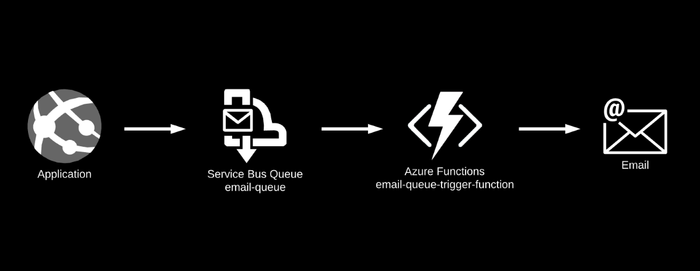
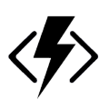
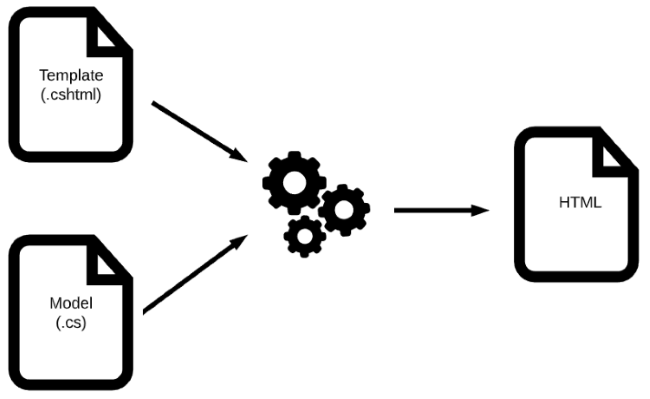
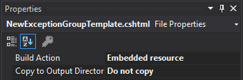

Razor-Powered E-mail in Azure Functions
On a couple of recent projects I’ve had the need to send automated e-mails to my users. For both implementations I chose the same approach: use Razor templates combined with Azure Functions to build a simple, maintainable, and loosely-coupled solution for sending transactional e-mails.
In this post I’ll show you how to do the same.

At a high level, here’s what happens when my application needs to send an e-mail:
- Application code determines that an e-mail should be sent.
- Application code writes a message to an Azure Service Bus queue (
email-queue). - Azure Function (
email-queue-trigger-function) receives message from Service Bus queue. - Azure Function builds e-mail from a Razor template and a template model.
- Azure Function sends e-mail.
For this post, I’ll focus on steps 3 through 5, the building and sending of the e-mail from an Azure Function.
Why This Approach?
I like this approach for a couple of reasons. Let’s talk about why I chose this path first, and then we’ll get into the code.
Azure Functions

My application already uses Azure Functions for some of its processing, and my requirement is to automatically send a user an e-mail when certain conditions are met during the course of that processing. Sending the e-mail is a side effect of the core domain processing - it should certainly happen, but I want it to happen in a separate process. I consider the building and sending of e-mails as supporting application logic and not part of my domain logic.
Using a Service Bus-triggered Azure Function works nicely for this. When the conditions are met that need to trigger an e-mail, the core process can simply enqueue the appropriate message on the e-mail Service Bus queue and continue with its work. Fire and forget.
The Service Bus queue is durable and reliable. We can rest assured that once the message is on the queue, it won’t be lost. The Service Bus-triggered Azure Function responsible for sending e-mails is invoked as soon as there is a message on the queue, and it starts its work building and sending the e-mail. If there’s a failure in my receiving Azure Function or it’s down for some reason, the Service Bus queue will keep the message until it can be properly handled.
Isolating the e-mail sending logic in its own Azure Function offers a few benefits:
- It promotes loose coupling.
- It keeps the domain code focused and not concerned with supporting functions.
- It can be scaled independently from other functions.
Razor Templates
Razor templates are particularly well-suited for defining the layout of an HTML-based e-mail. Razor is a markup language used tor generating HTML from a Razor template combined with a C# object.
Razor allows you to define the body of your layout declaratively, which is a natural programming paradigm for expressing a desired outcome, like a user interface, query result, file format, or, as in our case, an e-mail body.
I define a Razor e-mail template for each type of e-mail that my application needs to send. Each template has a corresponding model class, representing the data that is needed to render that template. When I need to render the template (to build the e-mail), I pass my template and an instance of the corresponding model class to a Razor rendering engine, and it returns the generated HTML as a string.
I much prefer this approach to building the e-mail body imperatively by concatenating strings in C#!

Prerequisites
There are a couple of prerequisites we’ll need in order to get our Azure Function sending e-mail:
-
Razor Rendering Engine - I’m using the RazorLight.Unofficial 2.0.0-beta1.3 package to generate my HTML from the Razor template and model. It’s a pre-release package, but if that makes you squeamish there are other alternatives out there.
-
Transactional E-mail Service - For my e-mail service I’m using Mailgun, which I’ve been fairly happy with. You can send e-mail via their HTTP API or by SMTP, and they offer many of the features that you’d expect from an enterprise e-mail service.
Implementation
Let’s dig into some code. We’ll start by looking at the e-mail message that we’ll be sending.
The Message
Razor Template
All of my e-mail templates live in a folder in my Functions project called \EmailTemplates. In it there’s a Razor template named NewExceptionGroupTemplate.cshtml:
@model ServiceTrace.Domain.Model.Email.NewExceptionGroupModel
<h3>@Model.Subject</h3>
<p>To view the full exception details, click <a href='@Model.Url'>here</a></p>
<div><strong>Message:</strong> @Model.Message</div>
<div><strong>Time Occurred:</strong> @Model.TimeOccurred.ToString("G") UTC</div>
<div><strong>Stack Trace:</strong></div>
<div>
<pre><code>@Model.StackTrace</code></pre>
</div>
Important: Set the Build Action for all Razor email templates to Embedded Resource and the Copy to Output Directory to Do not copy.

Template Model
The model that provides the data for this template is NewExceptionGroupModel. It’s a POCO that has properties for each of the data items that will be merged into the Razor template:
public class NewExceptionGroupModel : IEmailTemplateModel
{
public NewExceptionGroupModel() { }
public NewExceptionGroupModel(ExceptionInstance exceptionInstance, IProject project)
{
Subject = $"New exception thrown in {project.Name}";
Message = exceptionInstance.Message;
TimeOccurred = exceptionInstance.TimeOccurred;
StackTrace = exceptionInstance.StackTrace;
Url = exceptionInstance.Url;
}
public string Subject { get; set; }
public string TemplateName => "NewExceptionGroupTemplate";
public string Message { get; set; }
public DateTimeOffset TimeOccurred { get; set; }
public string StackTrace { get; set; }
public string Url { get; set; }
}
Finally, IEmailTemplateModel has a couple of properties that are common to all of my e-mail template models:
public interface IEmailTemplateModel
{
string Subject { get; }
string TemplateName { get; }
}
The TemplateName property identifies the Razor template that this model corresponds with. It will be used to retrieve the appropriate Razor template when we’re ready to generate the HTML for the e-mail body. The rest of the properties are data items that will be merged into the Razor template.
So that’s all that’s needed to define the e-mail message body - we’ll see how it gets turned into HTML in a moment…
Receive the Message
I’m using a Service Bus queue, cleverly named email-queue, as the channel by which the rest of my application notifies my e-mail function that an e-mail needs to be sent. To do this, the application creates a new NewExceptionGroupModel with the appropriate data and puts it on the queue with a couple of additional user properties:
- EmailModelType - tells the e-mail function what type of model is in the queue message body.
- ToEmailAddress - tells the e-mail function who to send the e-mail to. (I’ve made this a user property on the message, but there’s no reason why it couldn’t be defined on
IEmailTemplateModeland be part of the model.)
The function that responds to a new message on email-queue reads the user properties on the message and deserializes the message body into an instance of the appropriate e-mail template model, NewExceptionGroupModel in this case, and invokes _emailSender.SendEmailAsync(..) to build and send the e-mail:
[FunctionName("email-queue-trigger-function")]
public async Task Run([ServiceBusTrigger("email-queue", Connection = "ServiceBusConnectionString")] Message message, ILogger log)
{
using (ExcepticonSdk.Init(_appSettings.ExcepticonOptions))
{
try
{
if (message.UserProperties.ContainsKey(EmailModelTypeKey))
{
var modelType = message.UserProperties[EmailModelTypeKey].ToString();
IEmailTemplateModel emailModel = null;
switch (modelType)
{
case nameof(NewExceptionGroupModel):
emailModel = JsonConvert.DeserializeObject<NewExceptionGroupModel>(Encoding.UTF8.GetString(message.Body, 0, message.Body.Length));
break;
// handle other types of e-mails here
}
if (emailModel != null)
await _emailSender.SendEmailAsync(message.UserProperties["EmailAddress"].ToString(), emailModel);
}
}
catch (Exception e)
{
ExcepticonSdk.CaptureException(e);
}
}
}
(Shameless plug: I’ve wrapped my function body in a try..catch that sends any exceptions that occur to Excepticon, an exception monitoring service. I built Excepticon and wrote about it in a previous post. Using Excepticon is certainly not required for the topic we’re discussing here, but if you’re looking for an exception monitoring service, I invite you to check it out. Now, back to our program…)
Build and Send
The EmailSender instance is managed my IoC container and injected into the function. The interface is straight-forward:
public interface IEmailSender
{
Task SendEmailAsync(string toAddress, IEmailTemplateModel templateModel);
}
The implementation of IEmailSender.SendEmailAsync(..) consists of rendering the e-mail template and corresponding model as a string of HTML, and then building the web request to POST to the Mailgun API:
public class EmailSender : IEmailSender
{
private readonly IAppSettings _appSettings;
private readonly RazorLightEngine _razorLightEngine;
private readonly HttpClient _httpClient;
private const string MailGunBaseUrl = "https://api.mailgun.net/v3";
public EmailSender(IAppSettings appSettings)
{
_appSettings = appSettings ?? throw new ArgumentNullException(nameof(appSettings));
_razorLightEngine = new RazorLightEngineBuilder()
.SetOperatingAssembly(Assembly.GetExecutingAssembly())
.UseEmbeddedResourcesProject(typeof(Startup))
.UseMemoryCachingProvider()
.Build();
_httpClient = CreateHttpClient();
}
public async Task SendEmailAsync(string toAddress, IEmailTemplateModel templateModel)
{
var emailBody = await RenderEmailTemplateAsStringAsync(templateModel);
var requestContent = new FormUrlEncodedContent(new List<KeyValuePair<string, string>>
{
new KeyValuePair<string, string>("from", _appSettings.EmailSettings.SupportEmailAddress),
new KeyValuePair<string, string>("to", toAddress),
new KeyValuePair<string, string>("subject", templateModel.Subject),
new KeyValuePair<string, string>("html", emailBody)
});
var result = await _httpClient.PostAsync($"{_appSettings.EmailSettings.Domain}/messages", requestContent);
result.EnsureSuccessStatusCode();
}
private async Task<string> RenderEmailTemplateAsStringAsync(IEmailTemplateModel templateModel)
{
var templatePath = $"EmailTemplates.{templateModel.TemplateName}.cshtml";
return await _razorLightEngine.CompileRenderAsync(templatePath, templateModel);
}
private HttpClient CreateHttpClient()
{
var httpClient = new HttpClient { BaseAddress = new Uri($"{MailGunBaseUrl}/") };
var authHeader = $"api:{_appSettings.EmailSettings.MailGunApiKey}";
httpClient.DefaultRequestHeaders.Add("Authorization", $"Bearer {authHeader.Base64Encode()}");
return httpClient;
}
}
And that’s it! Most of the heavy lifting is done by the RazorLightEngine and Mailgun.
Gotchas
There are a few bumps I ran into along the way while trying to get this to work. Hopefully this will save you some pain if you’re going down the same path.
-
Error compiling Razor when using the latest Microsoft.NET.Sdk.Functions package (3.0.5)
My call to
_razorLightEngine.ComplieRenderAsync(..)was throwing the following error:Could not load file or assembly 'System.IdentityModel.Tokens.Jwt, Version=5.6.0.0, Culture=neutral, PublicKeyToken=31bf3856ad364e35'This issue is documented here.
The workaround is to downgrade Microsoft.NET.Sdk.Functions to 3.0.3.
-
Project settings to support RazorLight rendering
There are a couple of settings you’ll probably have to set in your Azure Functions project file to enable the RazorLight rendering. I had to set
PreserveCompilationReferencesandPreserveCompilationContextboth totrue:<PropertyGroup> <TargetFramework>netcoreapp3.0</TargetFramework> <AzureFunctionsVersion>v2</AzureFunctionsVersion> <PreserveCompilationReferences>true</PreserveCompilationReferences> <PreserveCompilationContext>true</PreserveCompilationContext> </PropertyGroup>The RazorLight project page lists these and a couple of other project settings towards the bottom of the page that you may need to set depending on your circumstances.
The two I mentioned above were the only ones I had to set.
-
“Mailgun Magnificent API” response
It took me a little trial and error to get my Mailgun API calls to succeed and actually send the e-mail. For awhile I was getting a 200 response from the service, but the response body contained the string “Mailgun Magnificent API” and the e-mail wouldn’t send.
According to a comment on this Stack Overflow question, “‘Mailgun Magnificent API’ is Mailgun’s way of saying ‘Your sender domain and auth are all good, but I can’t figure out what API you’re asking for.”
If you get this, I’d suggest inspecting the way I set my
_httpClient.BaseAddressand how I build the URL for thePostAsync(..)call. If you have a/in the wrong place, you’ll get this response.
Today we’ve seen why using Razor templates coupled with Azure Functions is a good approach to sending transactional e-mails from your application. We’ve also seen how to implement this approach.
I hope it helps you if you’re considering going down the same path.
– Jon
I’m a developer and solo SaaS founder who likes to build things and share what I learn with others. If you’re interested software development, launching things, or random early morning thoughts, consider following me on Twitter or subscribe to my newsletter.
Thanks for reading!